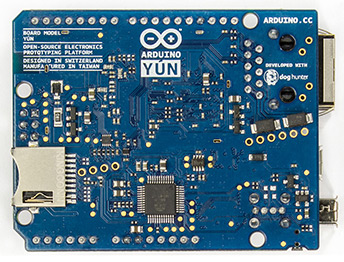
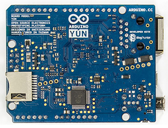

|
Arduino YÚN - это первый представитель новейшей серии плат
Ардуино со встроенным WiFi, сочетающих в себе широчайшие
возможности Linux и простоту использования Ардуино. Arduino YÚN
представляет собой комбинацию классического Arduino Leonardo (на
базе микроконтроллера ATmega32U4) и WiFi-системы на кристалле,
работающей под управлением Linino (дистрибутив ОС GNU/Linux на
основе OpenWRT для микропроцессоров MIPS). Технически мы
поместили Linux-машину на печатную плату Arduino Leonardo,
связав их таким образом, чтобы у программиста Ардиуно была
возможность удобно и просто запускать команды на стороне Linux,
используя его в качестве интерфейса Ethernet или WiFi. Следует
отметить, что из-за ограниченного объема памяти взаимодействие
Ардуино с различными веб-сервисами всегда было довольно сложной
задачей. Это объясняется тем, что многие веб-технологии зачастую
основаны на объемных текстовых форматах (подобных XML), для
анализа которых требуется достаточно много памяти. Поэтому для
Arduino YÚN мы создали специальную библиотеку Bridge,
использование которой позволяет переложить обработку
HTTP-транзакций и всех сетевых подключений на сторону Linux.
|
 

|